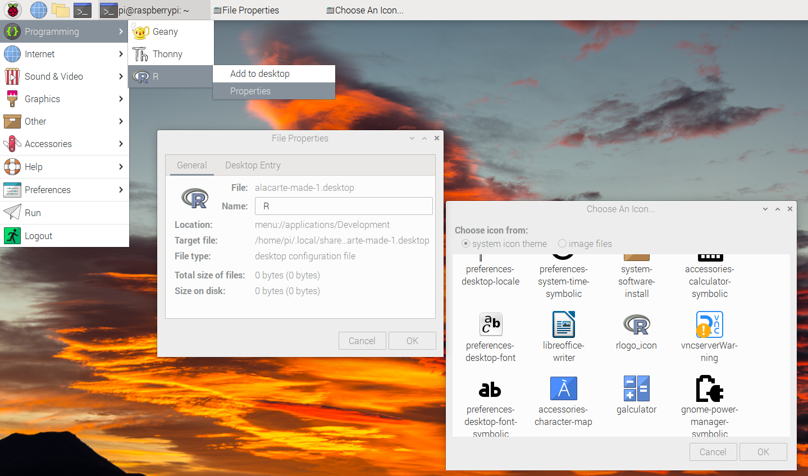

How to set up R for a Raspberry Pi
This document describes how to set up the R programming language on a Raspberry Pi.
A brief overview of the Raspberry Pi

Raspberry Pi Model 4
Hopefully this really isn’t necessary, but you may wonder why there’s a fuss about the Raspberry Pi. Here’s a few tidbits to get you started:
It’s a full-blown Linux computer, supports HDMI, ethernet, audio, a camera, USB and runs on five volts DC. It consumes somewhere around 3 to 6 watts.
See those dual rows of pins? That’s the General Purpose Input/Output (GPIO) pins. You can read and write to the outside world, plus support a wide array of sensors.
There is lots of support for programming with Python
Depending on the model you need, you could get your hands on a Raspberry Pi for somewhere between $5 and $45 USD.
Install R
The Raspberry Pi doesn’t come with R so you’ll need to install it. You might want to check out R4Pi, a website that provides precompiled binaries.
If the R4Pi website isn’t up and running, simply fall back to apt-get…
sudo apt-get update
sudo apt-get install r-base r-base-coreUnfortunately, this installs R as Root, which will cause problems
when you install.packages( ) since you don’t have access to
the library folder. I fixed this on my Raspberry Pi, but didn’t take
notes on what I did. When I figure that out, I’ll update this document.
My apologies.
Fix the App Menu
Unfortunately, the installer places R in the graphic menu instead of programming tools.
R appears in the graphic menu
That works, but it’s just annoying. To move it to the programming menu:
Go to the RPi menu (Raspberry Pi in the upper left).
Select Preferences
Select Main Menu Editor. This provides a dialog.
In that dialog, select programming.
On the right, select New Item:
-
In the dialog, fill in the fields with:
Name=R
Command=R
Launch in terminal. OK
Presto change-O. R is now in the programming menu.
Fix the Icon
Almost done with this trivial stuff, but the Icon for the R app is wrong. Let’s fix it…

In the Raspberry Pi menu, right click on R.
Choose Properties
Click on the Icon to bring up the chooser
In the System Theme, select rlogo.icon
Setup Geany
Apparently posit is working on a version of RStudio for Raspberry Pi. But as of the creation of this document, it’s not ready for prime time. I use Geany instead - it’s installed on the Raspberry Pi, it’s an IDE, and it’s better than a poke in the eye.
Configuring geany for R
There are a few things to set up before using Geany for R. I learned how to do this at the Geany documentation:
Start with edit -> preferences -> terminal and
check execute programs in VTE. This runs R in the Geany
terminal rather than opening up a separate terminal window. This isn’t
necessary, just a nice-to-have.
Next is Build -> Set Build Commands which opens up a
dialog. Enter Rscript ./%f in
Execute : Command. With this setup, run an R program in by
selecting Build -> Execute. Graphs and other output are
saved next to the input file.
In the same dialog, go to the first row. Click on the cell for Label
and enter something descriptive like “R CMD.” In the next cell (COMMAND)
enter R CMD BATCH ./f . This command now appears at the top
of the Build menu. Selecting this option will run the command, capturing
the STDOUT to a xxx.Rout file.
Note that file names cannot have spaces.